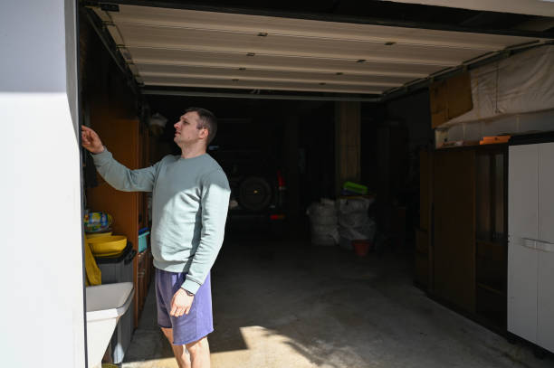
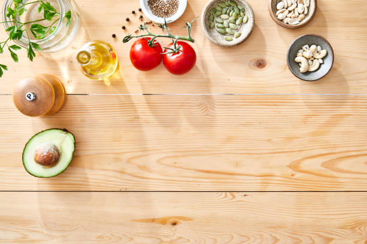

Cleveland Oklahoma
info@ohmykitchen.pro
Cleveland Oklahoma
info@ohmykitchen.pro

Upgrade your home in Cleveland Oklahoma with custom countertops. Choose from granite, quartz, and marble. Expert craftsmanship, affordable pricing, and guaranteed satisfaction for every project.
Click Here To Call Us (877) 848-1711Looking to enhance the elegance and functionality of your kitchen or bathroom? Our countertop company in Cleveland Oklahoma specializes in providing top-tier solutions tailored to your style and needs. Whether you're planning a full remodel or a simple upgrade, we offer a wide range of materials, including granite, quartz, marble, and more, designed to complement any home aesthetic.
Our expert team takes pride in delivering precision-crafted countertops that elevate your space. With years of experience serving homeowners in Cleveland Oklahoma we understand the importance of durability, style, and affordability. Our installation process is seamless, ensuring minimal disruption to your daily life while achieving outstanding results.
Choosing the right countertops is a critical investment for your home. That’s why we offer personalized consultations, helping you select the perfect material, color, and design to suit your lifestyle. From scratch-resistant quartz to timeless granite, our products are not only beautiful but built to last.
At Countertops, we prioritize customer satisfaction, offering competitive pricing and a commitment to excellence. Discover why countless homeowners in Cleveland Oklahoma trust us to bring their countertop visions to life. Contact us today to schedule your free estimate and turn your dream kitchen into a reality!
Residential & commercial Countertops
Quality services at affordable prices
Immediate 24/ 7 emergency services


Choosing the right countertop for your kitchen or bathroom in Cleveland Oklahoma is essential for both aesthetics and functionality. With a wide variety of materials available, it's important to consider factors such as style, durability, maintenance, and budget to make the best choice for your home.
First, think about the style of your space. Do you prefer modern, traditional, or something in between? Materials like quartz and granite offer a sleek, sophisticated look, while marble is perfect for classic or luxurious spaces. For those seeking a natural, earthy vibe, wood or concrete countertops can create a warm and inviting feel.
Durability is another critical consideration. Kitchen countertops are often subject to spills, heat, and daily wear, so choosing a tough, resilient material like granite, quartz, or solid surface is ideal for high-traffic areas. On the other hand, bathroom countertops may not face the same level of use, allowing for more options such as marble or even reclaimed wood for a unique touch.
Maintenance is important too. Some materials, like granite and quartz, require minimal upkeep, while others like marble may need sealing and careful cleaning. If you're looking for low-maintenance countertops, quartz is an excellent choice.
Finally, budget plays a significant role. Granite and quartz may be pricier, while laminate or butcher block can offer great looks at a lower price point. By evaluating your specific needs, you can choose the perfect countertop that fits both your design vision and practical requirements in Cleveland Oklahoma .
Residential & commercial Countertops
Quality services at affordable prices
Immediate 24/ 7 emergency services
Elevate your home bar experience with stylish and functional countertops designed for entertaining. Our countertop installation service for home bars in Cleveland Oklahoma focuses on aesthetics and practicality, ensuring your bar is a space where you can host and enjoy gatherings comfortably. From sleek quartz to warm butcher block, we offer materials that complement your home decor while being durable enough for everyday use.
Choosing us means you get a dedicated team that appreciates how important your home bar is to your entertainment space. We help you select the right materials and design options that meet both your style and functionality needs. Our experienced installers ensure that every detail is perfect, resulting in a stunning home bar countertop. Impress your guests and enhance your hosting capabilities with our expert installation services for home bars .

As sustainability becomes a priority, we are proud to offer eco-friendly countertop options . From recycled materials to sustainably sourced products, our selection varies widely to meet your green building needs without sacrificing quality or style. Eco-friendly countertops can bring beauty to your home while also reflecting your commitment to environmental responsibility.
What sets us apart? We are knowledgeable about the best eco-friendly materials available in the market, helping you choose products that align with your values. Our team will take the time to explain the benefits of each option, from recycled glass to reclaimed wood. We ensure expert installation that prioritizes preservation and longevity, so your sustainable choices stand the test of time. Go green with confidence by selecting our eco-friendly countertop options in Cleveland Oklahoma .

When only the best will do, look to our luxury countertop installation service . We specialize in high-end materials, including exquisite granite, luxurious marble, and stunning quartzite. Our commitment to quality and craftsmanship ensures that your luxury countertops will not only enhance the beauty of your home but will also serve as a long-lasting investment.
Choosing us guarantees your luxury countertop project receives the attention and expertise it deserves. We work closely with you to select materials that reflect your style and complement your space, ensuring every aspect of the installation is handled with precision. Our team of skilled artisans has extensive experience with high-end materials, providing flawless finishes that will leave you in awe. Elevate your home with our luxury countertop installations where elegance meets expertise.

In commercial kitchens, durability and functionality are paramount. We provide high-quality countertop installation services tailored to commercial environments in Cleveland Oklahoma ensuring that your kitchen meets both aesthetic and practical needs.
Why choose our services for your commercial kitchen? We understand the unique requirements of commercial spaces, offering durable materials that withstand wear and tear. Our team is experienced in working with various businesses, from restaurants to catering facilities, ensuring compliance with health and safety regulations. We’ll work with your schedule to minimize downtime, delivering superior service without disruption to your operations. Trust us to equip your commercial kitchen with countertops designed for peak performance and longevity!

Elevate your retail space with our custom countertop installation services . Countertops in retail environments not only need to be functional but also need to attract customers and complement your brand's identity. Our team specializes in creating visually appealing and practical countertop solutions tailored to retail settings.
We offer a variety of materials that combine form with function, including laminate, solid surface, and concrete. Each material can be customized in terms of color, texture, and edge design, allowing you to create a unique atmosphere that resonates with your brand.
Our experienced installers ensure that each countertop fits perfectly within your space while adhering to the highest standards of quality and craftsmanship. By focusing on aesthetics and durability, we aim to enhance the overall shopping experience for your customers.
With our retail store countertop solutions, you’re making a valuable investment in your business's presentation and functionality. Trust us to help you create an inviting and stylish retail environment that draws in customers.
In the hospitality industry, countertops play a vital role in creating an inviting and functional atmosphere for guests. Our hotel and restaurant countertop solutions focus on providing stylish and durable surfaces that enhance both service and aesthetic appeal.
We understand that each hotel or restaurant has a unique brand identity, and our team works diligently to craft countertops that reflect this. Whether you need elegant bar surfaces or practical buffet stations, we have solutions tailored to your specific requirements.
Choosing us for your hospitality countertops ensures you receive exceptional quality and service. Our commitment to timely installations and high-quality materials means you can focus on providing a great experience for your guests while we handle the details.

Create a professional and inviting workspace with our office countertop installation services in Cleveland Oklahoma . Countertops in office environments play a crucial role in functionality and aesthetics, which is why our team focuses on providing high-quality materials designed to enhance your office's appearance and usability.
We offer a variety of materials, including laminate, quartz, and solid surface options, ensuring that every surface is not just beautiful but also suited for daily use. Our expert team collaborates with you to design and install countertops that reflect your corporate identity while maximizing workspace efficiency.
Whether you need reception desks, meeting room tables, or break room surfaces, we provide tailored solutions that meet your specific requirements. We ensure a smooth installation process with minimal disruption to your daily operations, so you can focus on what you do best.
When you choose our office countertop installation, you’re investing in a professional image that fosters productivity and impresses clients. Trust us to deliver exceptional results that enhance your workspace.

In medical and laboratory environments, reliability and cleanliness are of utmost importance. Our countertops for medical and laboratory settings are designed to meet rigorous standards of hygiene while being durable enough to withstand heavy use. We offer a variety of surfaces that are non-porous, easy to clean, and resistant to chemicals and stains.
What makes our service exceptional? We focus on safety and compliance, ensuring our materials align with health standards and regulations. Our knowledgeable team understands the specific requirements of medical and laboratory settings, recommending countertops that maintain a sterile environment. Choose us for your medical and laboratory countertop needs and ensure a safe and efficient workspace for professionals and patients alike.
Years Experience
Expert Technicians
Satisfied Clients
Compleate Projects
When it comes to choosing the perfect countertops for your kitchen, ohmy kitchen is the trusted name across Cleveland Oklahoma . With years of experience, our team specializes in providing high-quality countertops that enhance both the functionality and beauty of your space. Whether you're renovating an existing kitchen or designing a new one, our vast selection and expert craftsmanship ensure your countertops meet your specific needs and style preferences.
At ohmy kitchen, we understand that countertops are an essential part of your home. That’s why we offer a wide range of materials, including granite, quartz, marble, and more, allowing you to select the ideal fit for your kitchen. Our countertop solutions are not only aesthetically pleasing but also durable and easy to maintain, providing long-term value for your investment.
What sets us apart from the competition in Cleveland Oklahoma is our commitment to customer satisfaction. We take pride in offering personalized consultations, helping you choose the best countertops that complement your unique vision and budget. From precise installation to seamless finishing, our team ensures that every detail is handled with the utmost care.
Choose ohmy kitchen for all your countertop needs in Cleveland Oklahoma and experience unparalleled quality, expert service, and a finished product that exceeds your expectations. Let us turn your kitchen into a space that you’ll love for years to come!
When it comes to kitchen and bathroom renovations, granite countertops are a top choice for homeowners . Known for their durability, elegance, and timeless appeal, granite offers a unique, natural beauty that enhances any space. As experts in granite countertop installation, we pride ourselves on delivering high-quality craftsmanship and personalized customer service. Our team is experienced in selecting the right slabs, ensuring proper measurements, and performing meticulous installations.
But why choose us? We understand that each customer has unique preferences and needs when it comes to countertops. Our extensive selection of granite colors and patterns guarantees that you’ll find the perfect fit for your home. On top of that, we handle the entire process, from consultation to installation, ensuring a seamless experience. Our commitment to excellence and customer satisfaction sets us apart in the Cleveland Oklahoma area—let us make your dream kitchen or bathroom a reality with our stunning granite countertops!
Embrace modern sophistication with our quartz countertop installation services . Known for their engineered strength and versatility, quartz countertops come in a vast range of colors and finishes, offering homeowners endless design possibilities. Unlike natural stones, quartz is non-porous, making it resistant to stains, scratches, and bacteria, thus ideal for busy kitchens and bathrooms.
By choosing our quartz countertop installation, you benefit from our skilled craftsmanship and attention to detail. Our team specializes in custom installations, ensuring your countertops fit perfectly within your space. We take pride in selecting the finest quartz materials, sourced from reputable manufacturers, guaranteeing exceptional quality and durability.
We know that every home is unique. That’s why we work closely with you to create a customized experience, tailored to your vision and needs. Our customer service is unparalleled – we’re here to answer your questions and provide guidance throughout the installation process. Experience luxury and functionality with our quartz countertops, designed to enhance your home’s aesthetics and increase its value.
For those who desire a touch of luxury, marble countertops are the ultimate choice. Renowned for their beauty and sophistication, marble surfaces can elevate any kitchen or bathroom design. Our marble countertop installation services in Cleveland Oklahoma cater to those who appreciate the finer things in life. Each marble slab is unique, providing a one-of-a-kind aesthetic that can’t be replicated.
Why partner with us for your marble countertop project? Our skilled craftsmen understand the intricacies involved in marble installation. We utilize advanced techniques to ensure your countertops are not only beautiful but also durable. We’re dedicated to providing exceptional service, with consultations that help you choose the right type of marble suited for your needs. With our guidance, your home will exude elegance and style—let us help you create unforgettable spaces with our exquisite marble countertops!
For those seeking a warm, inviting kitchen atmosphere, butcher block countertops are an ideal choice. Made from hardwood strips bonded together, butcher block provides a durable and stylish surface perfect for food preparation and casual dining. Our butcher block countertop installation services offer a wide range of options, from traditional to modern styles that cater to your personal taste.
Our team specializes in seamless installations, ensuring that your butcher block is cut, fitted, and finished to perfection. We prioritize quality, using sustainably sourced woods that not only enhance your kitchen aesthetic but also offer longevity and resilience against wear and tear.
Choosing us means you are working with experts who are passionate about their craft. We believe in delivering exceptional results that truly reflect the character of our clients. Additionally, we provide guidance on maintenance and care, ensuring your butcher block countertops remain beautiful for years to come.
Laminate countertops are an excellent choice for budget-conscious homeowners looking for style without compromising on functionality. Available in an extensive range of colors and patterns, our laminate countertop installation services can simulate the look of more expensive materials without the associated costs.
Why choose our laminate countertop services? We focus on delivering high-quality materials along with a professional installation experience. Our team is well-versed in current laminate technology and design trends, ensuring your countertops are both stylish and up to date. Additionally, we provide maintenance advice to ensure your countertops maintain their beauty over time. Trust us to transform your space affordably with stunning laminate countertops!
Solid surface countertops are an innovative option for those seeking a blend of durability, versatility, and design flexibility. Our solid surface countertop installation service offers customizable solutions that can fit seamlessly into any kitchen or bathroom. Known for their non-porous nature, solid surface countertops are easy to clean and resist stains, making them a practical choice for busy households.
Why partner with us? Our experienced team provides in-depth consultation services to help you choose the ideal solid surface material and design that complements your space. We pride ourselves on our attention to detail and the high-quality finishes we provide. From intricate edge designs to seamless installations, our solid surface countertops will enhance your property’s aesthetic while offering exceptional functionality. Experience the endless possibilities of solid surface counters with our expert installation services.
For a modern and industrial-chic addition to your home, consider our concrete countertop installation service . Concrete countertops are becoming increasingly popular due to their unique aesthetic, versatility, and strength. They can be customized to any shape, color, or design, making them an ideal choice for creative homeowners and business owners looking to make a statement.
What can you expect from us? Our team of concrete experts is skilled in crafting and installing concrete countertops that meet the highest standards of quality. We take the time to understand your vision to create a bespoke product that speaks to your style and functionality needs. Whether you desire a rustic appeal or a sleek modern look, our concrete countertops can be transformed to fit your desired aesthetic. Trust our skilled professionals to bring your vision to life with our concrete countertop installation services in Cleveland Oklahoma .
For environmentally conscious homeowners, recycled glass countertops offer a unique blend of sustainability and style. With sparkling aesthetics and a commitment to eco-friendliness, these countertops can transform any space into a modern masterpiece. Our recycled glass countertop installation services are designed to provide a stunning, sustainable solution for your kitchen or bathroom.
Why choose our services? We specialize in high-quality recycled glass products that are both durable and visually appealing. Our team is dedicated to providing professional installation, ensuring that your new countertops are both functional and beautiful. Plus, we can guide you on the best design choices that complement your existing décor while showcasing your commitment to sustainability. Experience the perfect harmony of style and sensitivity to the environment with our stunning recycled glass countertops!
At the heart of any great kitchen or bathroom is a stunning countertop that reflects your personal style. Our custom countertop design and fabrication services in Cleveland Oklahoma allow homeowners to transform their dream design into reality. Whether you prefer granite, quartz, marble, or any other material, we help craft countertops that are uniquely yours.
Our process begins with a consultation to understand your vision and requirements. Our design specialists work with you to create unique solutions that blend functionality and aesthetics seamlessly. From concept to reality, our skilled fabricators handle every aspect, ensuring attention to detail and a perfect match to your design.
Choosing us for your custom countertop needs means opting for a dedicated partner in your design journey. Our reputation is built on our commitment to craftsmanship and client satisfaction. We utilize state-of-the-art technology and skilled artisans to deliver products that exceed expectations.
If your countertops are worn out or outdated, our countertop replacement services can give your kitchen or bathroom a fresh new look. Whether you're seeking to upgrade to luxury materials or simply want to rejuvenate the existing design, we can help.
Why choose us for your replacement project? We understand that selecting the right countertops can be overwhelming. Our knowledgeable team will guide you through material options, styles, and budget considerations, ensuring a smooth decision-making process. Our skilled installers will handle everything, from removal of the old countertops to precise installation of your new surfaces, all while minimizing disruption to your home. Trust us to refresh and revitalize your space with our expert countertop replacement services!
Elevate your outdoor living space with our outdoor kitchen countertop installation service . The right countertops can transform your outdoor kitchen into a functional and attractive area perfect for entertaining and cooking. We offer a range of durable materials designed to withstand the elements and enhance your outdoor experience.
What makes us the best choice? Our focus on quality and functionality means we offer informed recommendations tailored to outdoor environments. We consider factors such as durability, weather resistance, and maintenance when selecting the right materials for your outdoor countertops. Our team of skilled professionals will ensure your outdoor kitchen countertops are installed with precision, adding beauty and functionality to your patio or garden. Choose us for outdoor kitchen countertop installation and enjoy a stunning outdoor paradise.
The kitchen island often serves as the hub of the home, making it essential to choose the right countertop that balances functionality and style. Our kitchen island countertop installation services in Cleveland Oklahoma offer a variety of materials and designs personalized to meet your needs.
Why choose our team for your kitchen island? We offer an extensive selection of high-quality surfaces, from granite and quartz to butcher block and more. Our experienced designers will work with you to create a custom island that complements your kitchen's decor while maximizing your space. Additionally, our expert installation will ensure that your kitchen island is both practical and beautiful. Trust us to deliver a functional centerpiece to your home with our kitchen island countertop solutions!
Transforming your bathroom can significantly enhance your home's comfort and appeal, and choosing the right countertops is essential to this process. Our bathroom countertop installation services in Cleveland Oklahoma cater to various styles and materials, from luxury options like marble to budget-friendly laminate, ensuring that you find the perfect solution for your space.
Understanding the unique requirements of bathroom environments, our team is dedicated to providing surfaces that are both beautiful and functional. We focus on selecting materials that can withstand moisture and daily use while enhancing the overall aesthetic of your bathroom.
Why choose us for your bathroom countertops? We prioritize quality, versatility, and client satisfaction. Our skilled installers are trained to handle complex bathroom layouts, ensuring every aspect of the installation meets your expectations. With our services, you can count on a hassle-free experience and a stunning finished product.
The edges of your countertops play a significant role in your kitchen or bathroom's overall look. Our countertop edge design and customization services allow you to add a personal touch to your surfaces, enhancing their unique beauty and character.
We offer a variety of edge profiles, from classic beveled and rounded edges to more contemporary options like waterfall and ogee styles. Our skilled craftsmen can work with a range of materials including granite, quartz, and solid surfaces, ensuring that your chosen edge design aligns perfectly with your overall décor.
Customizing your countertop edges not only enhances aesthetics but can also improve functionality, offering smoother surfaces that are less likely to chip or wear. Our team will assist you in selecting the perfect edge design that complements your style, opens up your space, and matches your countertop material.
When you choose our edge design services, you’ll enjoy both expert guidance and a stunning final product. Transform your countertops into true works of art, reflecting your style and improving your space's overall functionality.
If your existing countertops are showing wear and tear but the base is still functional, countertop resurfacing might be the perfect solution. Our countertop resurfacing services transform your surfaces, extending their lifespan and improving their appearance without the need for a full replacement.
We utilize specialized techniques and high-quality materials to rejuvenate your countertops, providing a fresh look that can make a significant difference in any room. Our team assesses your existing surfaces and recommends the best resurfacing options to achieve your desired aesthetic.
Choosing us for your countertop resurfacing ensures that you receive a solution that saves you time and money. We pride ourselves on our commitment to quality and customer satisfaction, ensuring that the resurfaced countertops meet your expectations and enhance your home's value.
Damage to countertops can be an eyesore and affect the functionality of your home. Our countertop repair and restoration services are here to handle everything from minor scratches to significant damage, ensuring your surfaces look great again.
Why are we the best choice for your repair needs? Our skilled technicians understand how to assess the type of damage and apply the best methods for restoration. We work with various materials, including granite, quartz, and laminate, ensuring a careful and effective repair process. Our commitment to excellence means that we’ll restore your countertops efficiently and professionally while providing advice on future care. Don’t let damage detract from your home’s beauty—let us restore your countertops to their former glory!
Proper care and maintenance of stone countertops are essential to preserving their beauty and functionality. Our sealing and maintenance services in Cleveland Oklahoma are designed to protect your investment and ensure that your surfaces remain in pristine condition for years to come.
We offer thorough sealing services using high-quality sealants that provide an effective barrier against stains and moisture. Our maintenance plans are tailored to your specific countertops, addressing any wear and ensuring your surfaces are regularly cared for.
Choosing us means you are partnering with experts in stone countertop maintenance. With a focus on quality service and customer satisfaction, we help you protect your investment and extend the life of your countertops, providing peace of mind that your surfaces will remain beautiful and functional.
When it comes to choosing the perfect countertops for your kitchen or bathroom in Cleveland Oklahoma granite, quartz, and marble are among the most popular options. Each of these natural stone materials offers unique benefits that can enhance the functionality, aesthetics, and value of your home.
Granite Countertops are known for their durability and resistance to heat, stains, and scratches. This makes them ideal for high-traffic kitchens and bathrooms in Cleveland Oklahoma where longevity is essential. With a wide range of colors and patterns, granite adds a timeless, natural beauty to any space.
Quartz Countertops are engineered from crushed stone and resin, which makes them non-porous and highly resistant to stains and bacteria. They require minimal maintenance, making them a low-maintenance option for homeowners in Cleveland Oklahoma . Plus, with countless colors and designs available, quartz can match any design style, offering a modern and sleek look to your home.
Marble Countertops exude luxury and elegance. Known for their unique veining and smooth texture, marble adds sophistication to kitchens and bathrooms in Cleveland Oklahoma . While marble requires more maintenance due to its porous nature, the classic beauty it brings to your space is unmatched.
Whether you choose granite, quartz, or marble, these countertops can elevate your home's value and style. By selecting the right material for your needs, you'll enjoy beautiful, long-lasting surfaces in your Cleveland Oklahoma home.
Cleveland is a city in Pawnee County, Oklahoma, United States. The 2010 census population was 3,251, a decrease of 0.9 percent from the figure of 3,282 recorded in 2000.
Typically, countertop installation by OhMy Kitchen in Cleveland Oklahoma takes 1-3 days, depending on the material and size of your project.
Yes, at OhMy Kitchen, we offer countertops in multiple thickness options, from sleek and modern thin profiles to thicker, more substantial options.
Yes, OhMy Kitchen offers countertop replacement services throughout Cleveland Oklahoma helping you upgrade to more durable or stylish options.
For outdoor kitchens in Cleveland Oklahoma we recommend granite or quartzite due to their durability and resistance to the elements.
Yes, OhMy Kitchen offers countertop resurfacing services restoring your countertops to like-new condition without a full replacement.
If your countertop is damaged, contact OhMy Kitchen immediately, and we will help assess the damage and provide repair or replacement options.
Absolutely! At OhMy Kitchen, we can create custom-shaped countertops to fit your kitchen's unique layout and style in Cleveland Oklahoma .
Yes, OhMy Kitchen provides fully customizable countertops in Cleveland Oklahoma allowing you to select the perfect size, color, and finish for your kitchen.
Yes, OhMy Kitchen provides countertop samples for you to view in person at our showroom or by scheduling a visit in Cleveland Oklahoma .
Yes, certain materials, like quartz, are non-porous and resistant to mold and bacteria, ensuring a clean and healthy kitchen environment .
We offer a wide variety of colors, from classic whites and blacks to vibrant reds and blues, to suit every design preference in Cleveland Oklahoma .
Use cutting boards and trivets to prevent scratches. Our experts at OhMy Kitchen can recommend the best protective methods for your countertop material.
Yes, OhMy Kitchen offers free consultations where we discuss your countertop needs, style preferences, and budget.
Many of our materials, such as granite and quartz, are highly heat resistant, making them perfect for cooking environments in Cleveland Oklahoma .
Absolutely! OhMy Kitchen offers professional countertop installation services throughout Cleveland Oklahoma to ensure a perfect fit and finish.
Granite countertops offer durability, resistance to heat and scratches, and a timeless aesthetic, making them a top choice for homeowners in Cleveland Oklahoma .
At OhMy Kitchen, we offer a wide range of countertops, including granite, quartz, marble, and more, to suit every style and budget .
Yes, OhMy Kitchen offers countertop repair services helping restore your surfaces to their original condition.
Yes! OhMy Kitchen offers a variety of modern countertop styles, including sleek quartz and polished granite, perfect for contemporary homes .
Simply contact OhMy Kitchen through our website or give us a call, and we will provide a detailed, no-obligation quote for your countertop project .
Yes, many of our countertop materials, such as quartz and granite, are highly resistant to stains, ensuring long-lasting beauty for your kitchen in Cleveland Oklahoma .
Marble countertops require a little extra care, such as regular sealing and avoiding acidic cleaners. Our team can guide you on proper care for your marble countertops .
We offer a warranty on all our countertops, ensuring peace of mind for our customers with long-lasting quality.
Our experts at OhMy Kitchen will help you choose the best material based on durability, aesthetics, and maintenance needs specific to your kitchen .
The cost of countertops varies depending on the material, size, and complexity. Contact OhMy Kitchen for a personalized quote.
Our professionals at OhMy Kitchen will assess your space, check for necessary preparations, and ensure your kitchen is ready for a smooth countertop installation .
For small kitchens, lighter-colored materials like quartz or light granite can create an illusion of space and brightness, making them ideal for your Cleveland Oklahoma home.
In some cases, installing new countertops over existing ones is possible. Our team at OhMy Kitchen can assess your current countertops and recommend the best approach for your project .
Maintenance varies by material, but regular cleaning with gentle products is recommended. Our team at OhMy Kitchen can provide specific care instructions for your countertops .
Yes, we offer sustainable and eco-friendly countertop options like recycled glass and bamboo to customers in Cleveland Oklahoma .
I couldn’t be happier with my new countertops from ohmy kitchen! The team was professional, and the quality is top-notch. Highly recommend them to anyone in Cleveland Oklahoma !
Profession
ohmy kitchen did an excellent job installing my countertops. The results are beautiful, and the service was top-notch. I highly recommend them in Cleveland Oklahoma !
Profession
ohmy kitchen did a fantastic job installing my new countertops. The quality is unmatched, and the installation was flawless. Great service in Cleveland Oklahoma !
Profession
Cleveland OK Countertops Pros
(877) 848-1711
info@ohmykitchen.pro
09.00 AM - 09.00 PM
09.00 AM - 12.00 PM